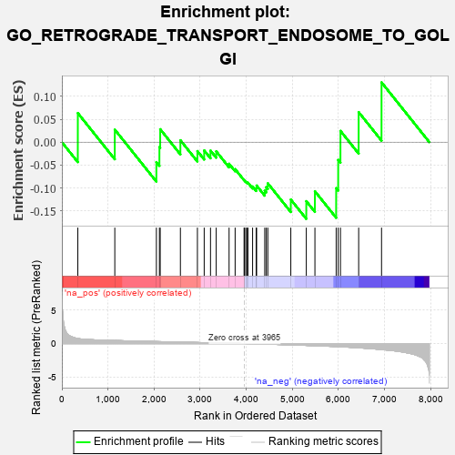
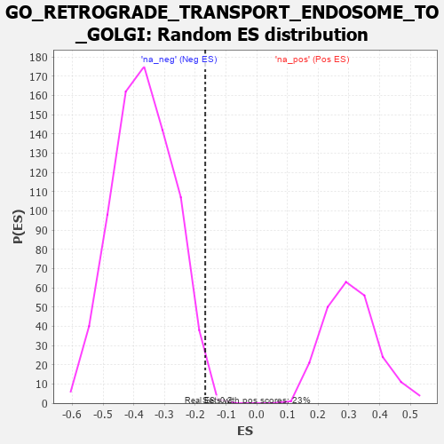

| | | Dataset | 7d |
| Phenotype | NoPhenotypeAvailable |
| Upregulated in class | na_neg |
| GeneSet | GO_RETROGRADE_TRANSPORT_ENDOSOME_TO_GOLGI |
| Enrichment Score (ES) | -0.16755778 |
| Normalized Enrichment Score (NES) | -0.45526326 |
| Nominal p-value | 0.9961039 |
| FDR q-value | 1.0 |
| FWER p-Value | 1.0 |
Table: GSEA Results Summary

Fig 1: Enrichment plot: GO_RETROGRADE_TRANSPORT_ENDOSOME_TO_GOLGI
Profile of the Running ES Score & Positions of GeneSet Members on the Rank Ordered List
| PROBE | GENE SYMBOL | GENE_TITLE | RANK IN GENE LIST | RANK METRIC SCORE | RUNNING ES | CORE ENRICHMENT | | 1 | CLN5 | | | 346 | 0.751 | 0.0635 | Yes |
| 2 | VPS54 | | | 1148 | 0.454 | 0.0274 | Yes |
| 3 | GOSR2 | | | 2050 | 0.298 | -0.0435 | Yes |
| 4 | STX16 | | | 2116 | 0.289 | -0.0106 | Yes |
| 5 | RAB6B | | | 2133 | 0.286 | 0.0283 | Yes |
| 6 | YKT6 | | | 2571 | 0.217 | 0.0041 | Yes |
| 7 | GOSR1 | | | 2940 | 0.159 | -0.0195 | Yes |
| 8 | STX6 | | | 3087 | 0.138 | -0.0182 | Yes |
| 9 | BET1L | | | 3224 | 0.118 | -0.0185 | Yes |
| 10 | UBE2O | | | 3348 | 0.097 | -0.0201 | Yes |
| 11 | RIC1 | | | 3627 | 0.055 | -0.0472 | Yes |
| 12 | VPS52 | | | 3758 | 0.033 | -0.0589 | Yes |
| 13 | GGA1 | | | 3952 | 0.002 | -0.0829 | Yes |
| 14 | EVI5 | | | 3960 | 0.001 | -0.0837 | Yes |
| 15 | VPS35 | | | 3989 | -0.006 | -0.0863 | Yes |
| 16 | SNX32 | | | 4012 | -0.010 | -0.0877 | Yes |
| 17 | VPS53 | | | 4036 | -0.014 | -0.0886 | Yes |
| 18 | VPS51 | | | 4137 | -0.030 | -0.0969 | Yes |
| 19 | GBF1 | | | 4215 | -0.044 | -0.1003 | Yes |
| 20 | VTI1A | | | 4224 | -0.046 | -0.0948 | Yes |
| 21 | STX5 | | | 4400 | -0.077 | -0.1059 | Yes |
| 22 | VPS29 | | | 4433 | -0.082 | -0.0982 | Yes |
| 23 | LRRK2 | | | 4467 | -0.087 | -0.0899 | Yes |
| 24 | SNX2 | | | 4966 | -0.191 | -0.1254 | Yes |
| 25 | RAB7A | | | 5302 | -0.271 | -0.1289 | Yes |
| 26 | RAB9B | | | 5489 | -0.316 | -0.1073 | Yes |
| 27 | DCTN1 | | | 5950 | -0.454 | -0.1005 | Yes |
| 28 | GCC2 | | | 5994 | -0.470 | -0.0388 | Yes |
| 29 | VAMP3 | | | 6043 | -0.487 | 0.0246 | Yes |
| 30 | ARL1 | | | 6438 | -0.636 | 0.0656 | Yes |
| 31 | SNX3 | | | 6934 | -0.893 | 0.1306 | Yes |
Table: GSEA details [plain text format]

Fig 2: GO_RETROGRADE_TRANSPORT_ENDOSOME_TO_GOLGI: Random ES distribution
Gene set null distribution of ES for GO_RETROGRADE_TRANSPORT_ENDOSOME_TO_GOLGI